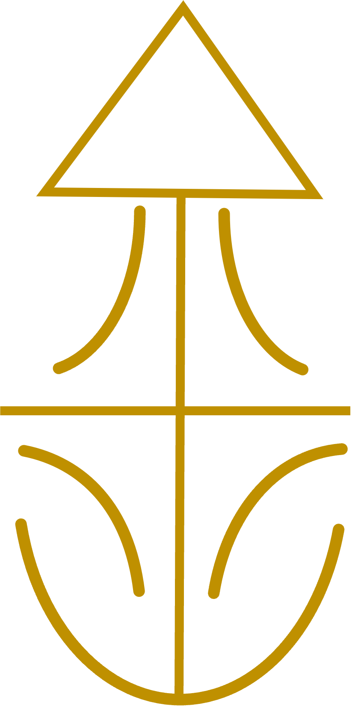

关于我 About Me
自我介绍

学生 其余读者自证不难
说明
我 使用 Emacs 写这些内容，感谢网络上各种教程帮忙，让 我 可以零基础体验魔法师的召唤术1。
现在这（以及其它所有）是一个 Org 生成的网页， 显然不能 一定要指望它多好看。
图基本是 DOT 语言生成的或者 PPT 截图来的
友邻
发现有人链接我了，不链接一下是不是不太礼貌嘻嘻 ~
一个朋友的漂亮高超的 Github 主页 (明明你更好看呢)
下一站 Your nexr stop:
The Internet used to be an archipelago of personal hyperspace islands. You surf around the web, visit others’ island, and they points you to other interesting islands to visit.
That’s what I’m doing here—point you to other people’s islands. If you find my island interesting, you’ll probably find these islands interesting too:
Footnotes:
1
SICP